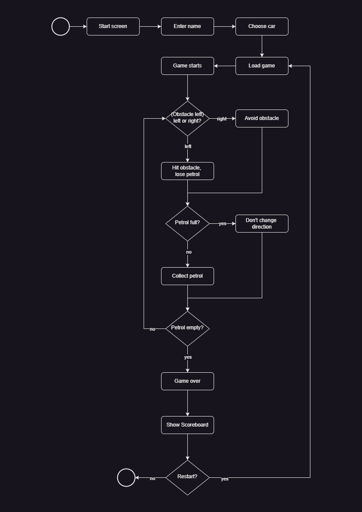
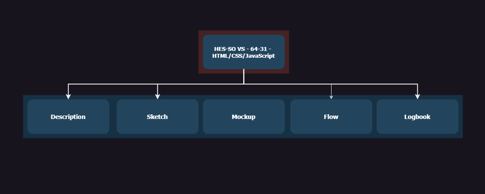

Game Flow Overview
By Apex Drifters Group 11/04/2023
Game Process Flowchart
The game Apex Drifters offers a great gaming experience starting from the initial screen where players are prompted to enter their name and choose their vehicle. The core gameplay involves navigating the car through an endless track, dodging obstacles to survive, and collecting petrol to continue the journey. Making strategic choices, such as when to dodge obstacles, is vital, as collisions will result in a reduction of the fuel level. The goal is to keep the car running for as long as possible. Once the petrol runs out, the game ends, and the player's score is displayed on the scoreboard. Players can choose to restart the game to strive for a higher score.
Below is the flowchart depicting these game mechanics, highlighting the decision points and consequences that the player faces throughout the game.
Site Map
The sitemap displayed above provides a visual representation of the website's structure for the "Apex Drifters" project. It outlines the main navigation pathways and organizes the site's content into distinct sections for ease of access. Each node represents a different page:
Description: Introduces the project with detailed information about "Apex Drifters," offering insights into the game's concept and features.
Sketch: Presents the initial design sketches, giving visitors a glimpse into the early stages of the visual development process.
Mockup: Displays the refined designs and mockups that bridge the gap between the initial sketches and the final visual elements used in the game.
Flow: Describes the game mechanics and progression, illustrated with a flowchart that guides players through the game's sequence from start to finish.
Logbook: Acts as a developmental diary, chronicling the journey of the game's creation, including updates, milestones reached, and team insights.
This sitemap facilitates navigation and comprehension of the project's scope, enabling visitors to understand the layout and access content straightforwardly.
